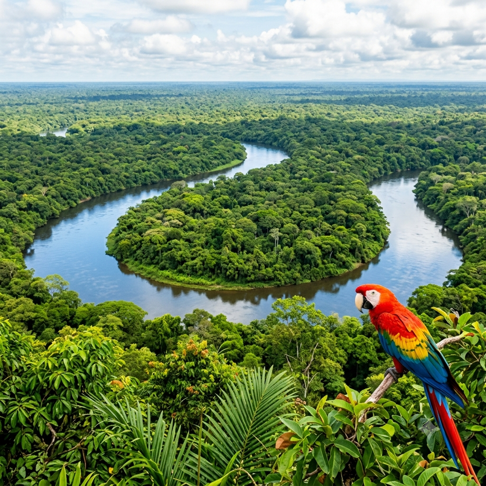

Meu primeiro post
Boas vindas ao meu novo blog! Aqui vou compartilhar informacoes da floresta Amazonica.
Por:Ariane Leal
A Floresta Amazonica e a maior floresta tropical do mundo. Ela cobre cerca de 6,7 milhoes de quilometros quadrados na America do Sul, ela passa por 9 paises, com a maior parte no Brasil, e guarda mais de dez por cento da vida animal e vegetal do planeta terra.
Clima equatorial - e quente e umido o ano todo, com chuvas frequentes.
Solo pobre - o solo da floresta e fraco em nutrientes. A vida se sutenta gracas a uma camada fina de folhas e restos organicos que se decompoem rapido e viram adubo de novo para as arvores.
Natureza e agua
Biodiversidade - Abriga 1 em cada 10 especies de plantas e animais conhecidas no mundo.
Rio amazonas - Possui a maior bacia de agua do planeta, e o rio principal despeja cerca de 20% de toda a agua doce dos rios do mundo no oceano.